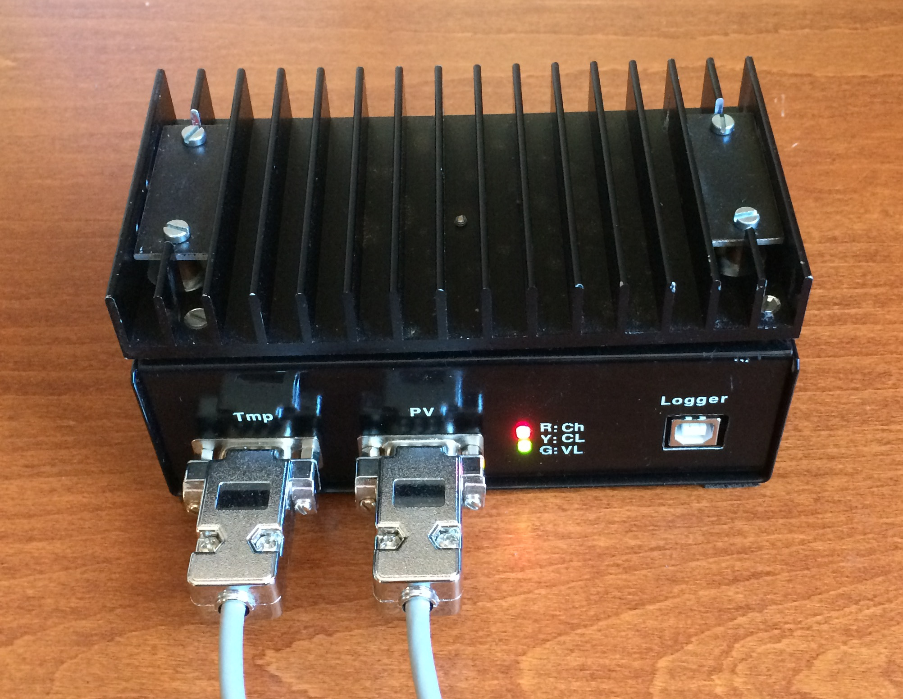
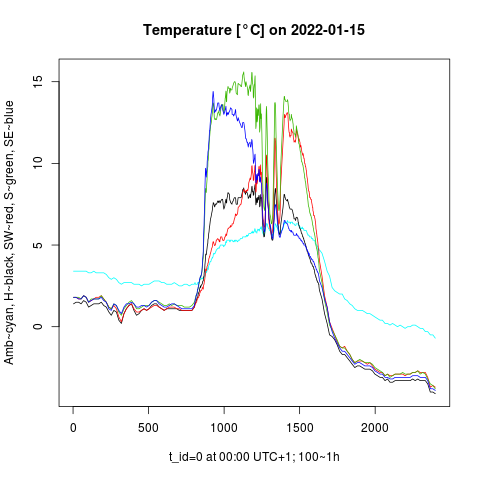

Photovoltaic intermittency and its measurement
Impact on the grid
Intermittency of solar irradiance causes that the time course of photovoltaic (PV) power generation is unstable in time. As the share of PV energy in the grid grows, the intermittency of solar power poses an increasing risk to the power quality and grid stability. To mitigate the temporary unbalance between PV infeed and power consumption, the grid operator sets PV generators off-grid (or at least to a low efficiency mode) while the solar intermittency is strong. For example, the losses of intermittent PV energy were 7% in 2011 in the US state Arizona. This loss-rate is determined by the irregular solar intermittency and by the share of PV energy in the grid: The higher PV share, the higher relative(!) losses of PV energy due to its intermittency. Extra grid-control costs are raised due to the PV intermittency. This overall impact has been projected to the last guaranteed feed-in tariff for new PV installations in Germany: In 2020, a new feed-in tariff was only about 1/3 of the purchase tariff. The state guarantee has been canceled as of 2021, and there is no more doubt that only technical innovations can further augment the share of PV energy in the grid: Smoothing of PV power could eliminate the losses of PV energy and the costs of additional grid control. A smooth time course of renewable power can be easily complemented by other resources (e.g. gas- and water turbines), which is impossible with the rapidly-changing renewable power.
On the other hand, the loss-free PV smoothing takes up expensive accumulation capacity, otherwise usable as a night energy storage. The objective is a loss-free smoothing of PV power with minimized accumulation costs.
Measurement of global irradiance
Accurate measurement of global irradiance (GI) is a prerequisite to analyze PV smoothing:
- Accurate short-term forecasting (nowcasting) of PV power is crucial to minimize the accumulation of energy in the PV power smoothing. PV power predictors are based on artificial intelligence (AI) and they can be trained by a sky-imagery and by the measured signal GI(t), in particular its fraction intercepted by a tilted PV panel.
- Using the measured time series GI(t), we can "ex-post" excite the low-pass filter with a "predicted" input signal GIf(t+Δt). That is, the measured signal is shifted to the left and its values are artificially biased by the simulated prediction error, simulating its real prediction. Given the predicted signal and the desired ramping limit of smoothed PV power, the accumulated energy by the filter should be minimized, hence minimized costs of the PV power smoothing.
- However low is the accumulated energy by smoothing, it is not for free. The smoothing pays-off only with a favourable "smooth feed-in tariff" which should be legalized by a technical standard: The standard defining power ramping limits to be met by those PV plants having a favourable feed-in tariff granted. This keeps the grid control costs within the specified limit and, on the other hand, the PV power infeed does not exceed the allowed ramping up/down limits. Having the filter model optimized for the standard, the accumulation rate and the corresponding smoothing cost can be aggregated by means of the measured GI signal. The ramping limit can be further iterated in order to maximize the difference "reduction in grid control costs" minus "smoothing costs". This is, how the PV ramping limits and the corresponding "smooth feed-in tariff" can be optimized.
Measurement of solar irradiance for the analysis of PV smoothing must meet the folloowing demands:
- Capture the full spectrum of solar intermittency using sufficient sampling frequency
- Measure the fraction of irradiance which is intercepted by a tilted plane of incidence.
- Respect the physical properties of planar silicon PV panels (reflexion and spectral response)

In general, the momentary solar irradiance has to be measured at any plane of incidence under given atmospheric conditions. Fulfilling all of these demands is not possible only by measuring the global (GHI) and diffused (dHI) horizontal irradiance (both of which are regularly measured by national weather services).
A corresponding measurement system with data logger has been developed and is in operation since 04/2021 at the author's site (48.2°, 17.1°).

The system consists of 2 units:
- external console carrying 4 reference PV panels mounted in different angles, and temperature sensors sticked on the panels,
- internal measurement unit, serving as a MPPT controller, battery charger, heat sink, A/D converter, and data logger.
The main system highlights:
- The reference monocrystaline silicon PV panels (sensors) have been calibrated by means of Ineichen’s clear-sky model , having its Linke-turbidity factor calibrated by the reference GHI, dHI measured at the near meteorological site. The PV panels are re-calibrated once a year.
- Temperature sensors are fixed onto each PV panel. The panels are always operated at the maximum output power (MPPT) . Their operating point is being dynamically adjusted for the temperature drift of their A-V characteristics and for their internal resistance. The measured output power of each panel is divided by its active surface area and by its (known) efficiency at given surface temperature. The measurement is eventually expressed as "photovoltaic global irradiance" in W/m2 analogous to GI measured at given angle of the plane of incidence, but taking into account the reflexion and spectral response of PV panels.
- Data logger samples GI with a dynamic frequency. The sampling period ranges from 0.5 second to 10 minutes, according to the solar intermittency. This captures the whole spectrum of solar intermittency, but eliminates the redundancy in stored data. Several years of such an irregular time series can be stored in a relational database with tablespace <1TB.
- The off-grid measurement system is self-powered 24 hours x 7 days a week. Except the measurement, the PV sensors supply power to the data logger and charge its backup accumulator. The system requires a minimum maintenance.

- Simultaneous measurement of GI in 4 fixed normal angles allows an accurate interpolation of GI at any plane of incidence pointing its normal vector among the 4 fixed normal vectors (intra-normal area).
Daily (12 h) profiles of photovoltaic GI [W/m2] measured at 4 fixed planes. GHI corresponds to the horizontal plane and extrapolated GNI corresponds to a virtual solar-tracked plane of incidence. Its normal vector points to the extra-normal area in winter while the solar elevation is lower than the elevation of the 4 fixed normal vectors. The approximated GNI is therefore less accurate in winter. 
Daily (24 h) temperature profiles at PV surfaces, and the ambient temperature. The PV surface's temperature is affected by the ambient temperature, solar radiation, and by the wind. The ambient temperature is higher than the sky temperature, so the PV panels are always cooled by their own radiation. This effect can be observed in the night when the panels are not exposed to solar radiation.